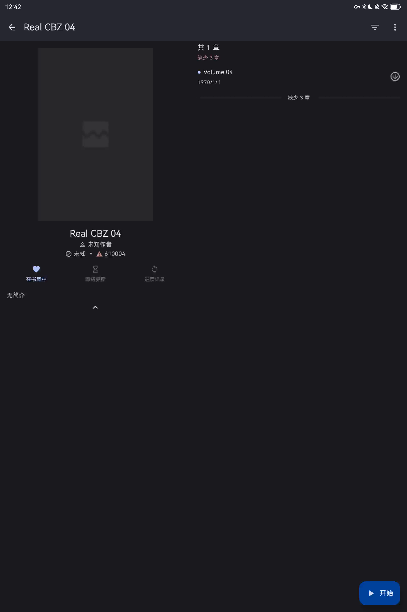

MIHON / EXPERIENCE LAB
打开一本漫画，
等待发生在哪里？
把同一次测量的时间放进画面，比较旧页保留、过渡与首图到来的感受。
关于我转生变成史莱姆这档事
第 04 卷 · 1 / 187 页 · 原始 WebP
离线交互 DEMO · 2026.11.02 测量样本
同时播放 A / B
全部重置
回放速度
1× 原速
2× 慢放
5× 慢放
正在预加载并解码画面…

点击画面 · 打开章节
首漫画像素
0.0
ms
等待播放
播放此卡
重置画面
恢复预设
手调每个环节
毫秒 ms
视觉转场
与内部阶段并行 · 示意参数